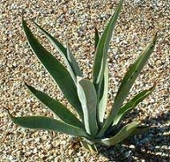
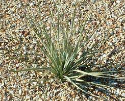
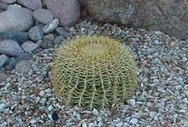
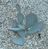

In the Desert Southwest, water is critical to our lives. We must learn to conserve our water resources without compromsing our environment. Home gardeners and landscae progessionals can help preserve our water resources by selecting plants that are conductive to the environment. Experienced gardening progessionals in the Southwest regions of the country have learned many lessons through the years. They especially have learned which plants can thrive in the hot and need to consider resource consequences.
The desert plants featured on this Web page have a natural beauty which can anhance any desert landscape. ALl plants shown are chosen for the hadines and low water usage. Browse the page by scrolling our use the selection menu.
These are some of the plants that survive well in the desert Southwest. Selevt a catacory to read more information on.
Botanical Name: Agavaceae
The Ageave species is known for its striking form and general tolerance to cold, heat, sun, drought, and poor or alkaline soils.Agaves are some of the most useful plants in the hot arid regions of the Southwest. Sizes of agaves vary from on to six feet in height.They have many interesting leaft styles and color variations. The pointed leaves of the Agave Americana are armed with thorns at the tips. This leaf formation allows them to capture tiny amounts of rain, which guides the moisture down to the roots.
These plants need water occasionally until established or when plants show stress by wilting or withering. You should prun them in September.
Botanical Name: Dasylirion weeleri
The Desert Spoon is a very dependable plant for the arid environment of the Southwest. This plant was used by the natives of the region for food and fiber. The leaf blad of the desert spoon is slender, toothed gray-green, The leaves radiate from the venter fo the plant in all directions. Groth is a moderate five to eight feet, and the leaves spread equally. Some plants develop a bloom stalk thta grows five or six feet above the foilage. THe bloom is topped by a long plume o fstraw-colored flowers taht look like grain.
The Dersert Spoon can be planted any season but summer and pruned in October.
Botanical Name: Echinocatus grusonii
The Golden Barrel grows to the height of four feet and width of three feet. The yellow flowers of the golden barrel generally grow in the spring. The foliage texture is coarse and the color is gold for this favorite Southwest plant. The golden barrel has a slow growth rate but also requires a low amount of water. The golden Barrel makes a dramatic landscape statement when thy are clumped together.
The golden barrel grows well in full to reflect the sun. It should be water occasionally and needs no maintenance.
Botanical Name: Opuntio violacea santa-rita
This type of prickly pear, called the sant-rita prickly pear, is very striking of its color. The prickly pear segments are tinged with purple or are totally purple. This gives a dramatic color contrast to other SOuthwest plants. Segments can grow to eight inches. Yellow Flowers may turn red near the base inside and produce red or purple fruit. The prickly pear is excellent to use a color feature in a landscape design.
The prickly pear can be cut back any time to shape or remove leaf pads too close to high-use areas.